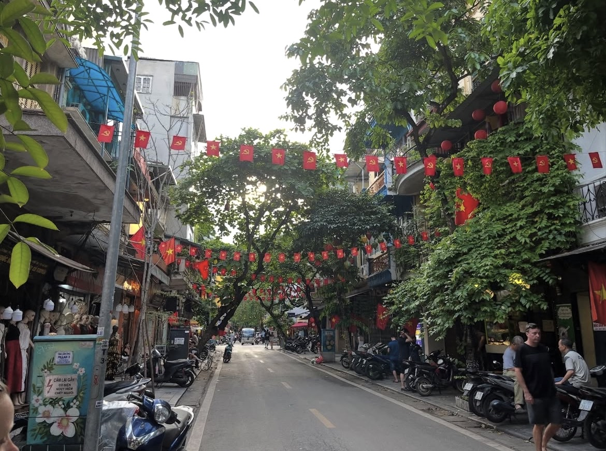
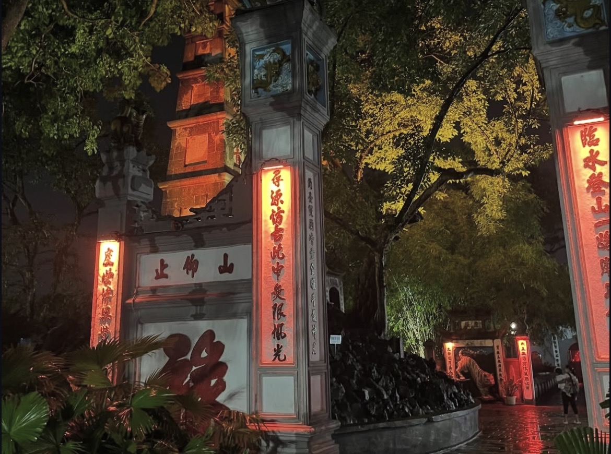

Hanoi was our first stop in Vietnam, and even with just two nights, it completely won us over. From buzzing streets and ancient temples to unique cultural experiences, the city has an energy that feels both chaotic and magical at the same time.
We visited Hanoi last April as part of our backpacking trip through Southeast Asia. We'd just flown in from Chiang Mai, Thailand, and had two nights to explore before heading onwards to Singapore. It wasn't long, but it was just enough to fall in love with the city and leave us already planning when we can come back for longer.
Getting to Hanoi
We flew into Noi Bai International Airport from Chiang Mai, which is about 45 minutes from the city center depending on traffic. Getting into town is straightforward. You can take a taxi (make sure it's metered or agree on a price first), book a Grab (Southeast Asia's version of Uber), or take the airport bus which is the cheapest option at around £1-2 per person.
We opted for a Grab, which was easy to arrange and cost us about £10-12 for the ride into the Old Quarter. The driver was friendly and it saved us the stress of navigating public transport after a long flight.
Where We Stayed
We stayed at Dream Hotel Boutique Travel & Spa in the Old Quarter, which cost us £61.14 for two nights. It was simple but really nice for the price. Clean, comfortable, and in a perfect location for exploring the city. The staff were helpful with recommendations, and the location meant we could walk to pretty much everything we wanted to see.
If you're looking for somewhere decent and affordable in the heart of Hanoi, this was a great choice. The Old Quarter has loads of accommodation options at every price point, so you'll definitely find something that works for your budget.
Exploring the Old Quarter
The Old Quarter quickly became one of our favorite parts of the city. The streets are full of life. Scooters weaving through traffic, tiny street food stalls on every corner, shops spilling onto the pavements, and locals sitting on tiny plastic stools enjoying bowls of pho. It's busy, loud, and a little chaotic, but that's exactly what makes it so special.
Each street in the Old Quarter traditionally specialized in a specific trade or product, and you can still see remnants of that today. One street might be full of silk shops, another dedicated to metalwork, and another lined with pharmacies. It gives the area this really unique character that you don't find in more modern city centers.

"It's busy, loud, and a little chaotic, but that's exactly what makes it so special."
The Food Scene
Speaking of food, Hanoi is absolutely incredible for eating. Vietnamese cuisine is one of our favorites, and eating it in Vietnam itself is a completely different experience to having it back home.
Pho is obviously the big one. It's a noodle soup with beef or chicken, fresh herbs, and lime. It sounds simple, but when it's made properly, it's absolutely delicious. We had pho for breakfast pretty much every morning we were there. You can get a bowl for about £1-2 from street vendors, and it's genuinely some of the best food you'll ever eat.
Bun Cha is another must-try. It's grilled pork served with rice noodles, fresh herbs, and a dipping sauce. We had this at a local spot in the Old Quarter and it was unreal. Cheap, fresh, and full of flavor.
Banh Mi (Vietnamese baguette sandwiches) are everywhere as well. French colonial influence means Vietnam does amazing bread, and banh mi combines that with Vietnamese flavors like pate, pickled vegetables, coriander, and various meats. They cost about £1 and make the perfect quick lunch while you're exploring.
Temples and Culture
Hanoi is full of beautiful temples, and they're definitely worth visiting while exploring the city. One highlight for us was Ngoc Son Temple, which sits on a small island in Hoan Kiem Lake and is reached by a bright red bridge called The Huc Bridge. It's peaceful, scenic, and feels like a little escape from the busy streets around it.
We also visited the Temple of Literature, which was Vietnam's first national university dating back to 1070. It's a beautiful complex with traditional Vietnamese architecture, peaceful courtyards, and lots of history. Entry is about £1.50, and it's worth spending an hour or so wandering around.

The Water Puppet Show
One of the most unique experiences we had was watching a traditional Vietnamese water puppet show at the Thang Long Water Puppet Theatre. It was such a cute and fun performance, telling traditional Vietnamese stories with puppets performing on water accompanied by live music. It's a bit touristy, but honestly it's worth it for the cultural experience.
Hoa Lo Prison
We also visited Hoa Lo Prison, which locals call the "Hanoi Hilton" (ironically, given it was anything but). Entry is about £1.50, and it's a really interesting and sobering experience. The museum gives insight into Vietnam's history, both during French colonial rule and later during the Vietnam War.
Coffee Culture
We can't talk about Hanoi without mentioning the coffee culture. Vietnamese coffee is strong, sweet, and absolutely delicious. You can have it black, with sweetened condensed milk, or even with egg yolk whipped into a creamy foam on top (egg coffee). The egg coffee sounds weird but it's actually incredible. Sweet, rich, and almost dessert-like.
Getting Around Hanoi
Hanoi is pretty walkable, especially if you're staying in the Old Quarter where most of the main sights are concentrated. We walked pretty much everywhere during our two days.
That said, crossing the road in Hanoi is an experience in itself. The trick is to just step out and walk at a steady pace. Don't stop, don't run, just walk confidently and the scooters will flow around you. It's terrifying the first time but you get used to it.
If You Have More Time: Halong Bay
If we had another couple of days, we would 100% recommend doing a trip to Halong Bay. Ideally, a two-night, three-day cruise is best if you want to avoid the crowds and really enjoy the scenery. We sadly didn't have enough time because we were flying onwards to Singapore, but it's definitely something we wouldn't miss next time.
Hanoi Budget Breakdown
Accommodation & Transport
- Dream Hotel (2 nights): £61.14
- Grab from Airport: £10-12
- City Transport: ~£5
Food & Attractions
- Total Food (2 days): £40-50
- Total Attractions: ~£18
- Total for two nights: ~£130-150
Practical Tips for Visiting Hanoi
Best time to visit: October to April is ideal. The weather is cooler and less humid.
Money: Vietnamese Dong (VND). Cash is king for street food and small shops.
Safety: Hanoi felt very safe. Petty theft can happen in crowded areas, so be vigilant, but we felt comfortable walking around even at night.
Final Thoughts
Hanoi is vibrant, historic, and full of character. Two nights gave us just enough time to fall in love with the city, but it definitely left us wanting more. If you love street food, history, and culture, Hanoi is absolutely worth visiting.